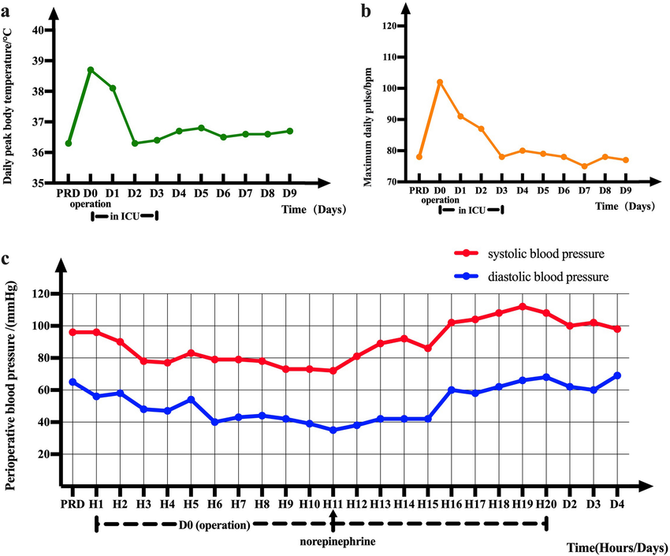
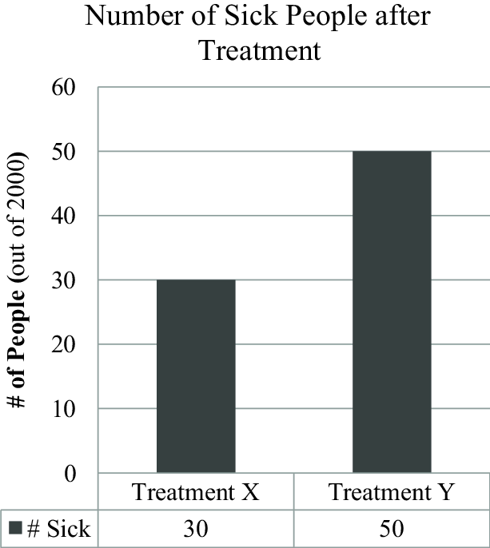

In today's data-driven healthcare environment, effective visualization of medical information is crucial for accurate diagnosis, treatment planning, and patient communication. Through my clinical rotations and technical projects, I've identified several key principles for presenting medical data effectively.
Choosing the Right Visualization
Different types of medical data require different visualization approaches:
Time-Series Data
For vital signs or lab values over time:
Best for: Tracking patient progress, medication effects
Comparative Data
For treatment outcomes or group comparisons:
Best for: Clinical trial results, population health
Interactive Dashboards
Modern clinical tools often use interactive visualizations. Key considerations:
- Filtering options for different patient cohorts
- Drill-down capabilities for detailed analysis
- Responsive design for mobile clinicians
Technical Implementation
For web-based medical dashboards, I recommend:
// Using Chart.js for medical data visualization
const ctx = document.getElementById('medicalChart').getContext('2d');
const medicalChart = new Chart(ctx, {
type: 'line',
data: {
labels: ['Jan', 'Feb', 'Mar', 'Apr', 'May'],
datasets: [{
label: 'Blood Pressure (mmHg)',
data: [120, 118, 115, 122, 119],
borderColor: '#FF6B6B',
tension: 0.1
}]
}
});
# Using Matplotlib for clinical research
import matplotlib.pyplot as plt
months = ['Jan', 'Feb', 'Mar', 'Apr', 'May']
bp_values = [120, 118, 115, 122, 119]
plt.plot(months, bp_values, color='#FF6B6B')
plt.title('Patient Blood Pressure Trend')
plt.ylabel('mmHg')
plt.show()
Key Takeaways
- Match visualization type to data characteristics
- Prioritize clarity over decorative elements
- Ensure accessibility for color-blind users
- Include proper context and scales